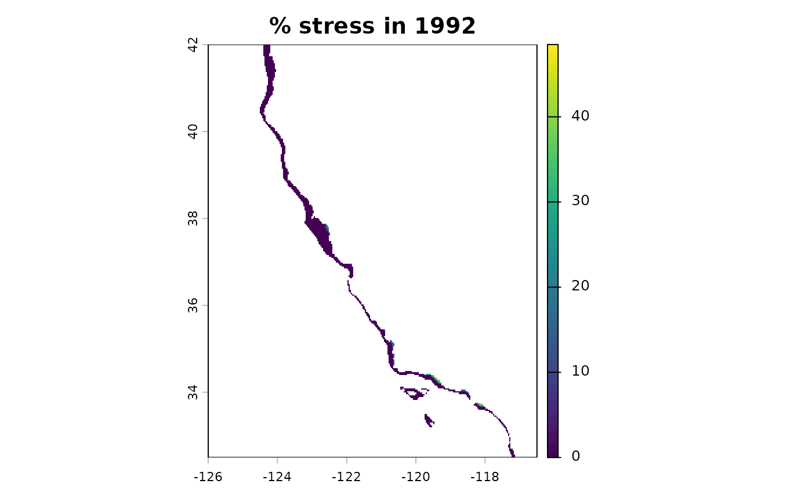

This function produces a terra:rast() object containing annual stress rasters, defined as
the percentage of each year that abalone experience stress based on the definition chosen.
Usage
build_stress(
percentdays = abalone::percentdays,
esm = c("ens", "gfdltv", "hadtv", "ipsltv"),
yrst = 1990,
yrend = 2100,
progress = TRUE,
save_path = NULL
)Arguments
- percentdays
R object. Dataframe. Defaults to
abalone::percentdays(i.e., example package dataset of % days of stress)- esm
Character. ESM model to use. Choose from
ens,gfdltv,hadtv,ipsltv.- yrst
Integer. Start year.
- yrend
Integer. End year.
- progress
Logical. Show progress bar? Default is TRUE.
- save_path
Character. Directory to save output to. Optional, set to NULL if not needed.
Value
Produces a terra::rast() object of % of year stressed, for the ESM specified, for all years between yrst and yrend.
Examples
ens_stress <- build_stress(percentdays = abalone::percentdays, esm = "ens",
yrst = 1990, yrend = 1992, progress = FALSE, save_path = NULL)
ens_stress
#> class : SpatRaster
#> size : 286, 286, 3 (nrow, ncol, nlyr)
#> resolution : 0.03321678, 0.03323263 (x, y)
#> extent : -126, -116.5, 32.49849, 42.00302 (xmin, xmax, ymin, ymax)
#> coord. ref. : lon/lat WGS 84 (EPSG:4326)
#> source(s) : memory
#> varnames : emptyrast_100
#> emptyrast_100
#> emptyrast_100
#> names : 1990, 1991, 1992
#> min values : 0.00000, 0.00000, 0.00000
#> max values : 45.20548, 48.49315, 55.19126
terra::plot(ens_stress[[2]], main = "% stress in 1992")
